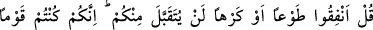
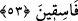
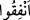
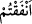

kimsenin kıyâmet gününde ateşten iki dili olacaktır.”[174] buyurulmuştur. Ebkâru’l-
efkâr adlı eserde bu şekilde geçmektedir.
53. De ki: “İster gönüllü ister gönülsüz olarak Allah yolunda harcayın, sizden
kabul edilmeyecektir. Çünkü siz, yoldan çıkan bir kavimsiniz!”
Münâfıklardan Ced b. Kays, Tebük gazvesine katılmamak için Peygamberimiz’den
izin istemiş ve “Sana malımla yardım edeyim.” demişti. İşte Cenâb-ı Hak bu âyette
Peygamberimiz’e şöyle buyuruyor: Ced b. Kays’a cevap olarak “de ki:” Ey Mûnafıklar
“İster gönüllü” kendiliğinizden itâaat ederek “ister gönülsüz” “olarak” öldürülme
korkusuyla istemeyerek “Allah yolunda” mallarınızı “harcayın, sizden kabul
edilmeyecektir.”
el-İrşâd müellifi demiştir ki: Âyetteki “gönüllü olarak” ifadesi, Peygamber (a.s.)
tarafından bir zorlama olmadan; “gönülsüz olarak” ifadesi ise sizin tarafınızdan istek
olmadan, demektir. Ya da bu ifâde şümûlü genişletmek için söylenmiş farazî bir
ifâdedir.
Aşağıda görüleceği üzere bu ifade “İstemeye istemeye sadaka verirler.” âyetine ters
düşmez.
Âyette geçen “sizden kabul edilmeyecektir” ifadesine iki türlü mânâ verilebilir:
“Peygamber (a.s.) onlardan sadakalarını kabul etmeyecek, verecekleri şeyleri
kendilerine iâde edecektir.” Ya da: “Allah Teâlâ onlardan kabul etmeyecektir ve onun
karşılığını vermeyecektir.”
“  (harcayın)” emir sîgası, haber mânâsında kullanılmıştır; “” (harcadınız)
demektir. Çünkü, “sizden kabul edilmeyecektir” cümlesi, “harcayın” fiilini zâhir
mânâsına hamletmeye mâni olmaktadır. Zira bir şeyi önce emredip ardından onun abes
olduğunu, hiç fayda temin etmeyeceğini söylemek anlamsız olur.
Rivayete göre Ced b. Kays, savaşa katılmamak için mazeret ileri sürünce oğlu
Abdullah onu kınayıp şöyle demişti: “Vallahi savaşa çıkmana yalnızca münâfıklığın
mâni olmaktadır. Allah, senin (bu durumun) hakkında âyet indirecektir.” Bu sözler
üzerine Ced, pabucunu alıp oğlunun yüzüne vurmuştu. Âyet inince Abdullah’ın: “Ben
sana söylememiş miydim?!” demesi üzerine Ced: “Sus ey alçak! Vallahi, sen bana
Muhammed’den daha sert davranıyorsun.” demiştir.
Daha sonra Allah Teâlâ: “Çünkü siz yoldan çıkan” (kâfir) “bir kavimsiniz” sözüyle,
onların sadakalarını kabul etmeme gerekçesini açıklamıştır. Buradaki fâsıklıkla (yoldan
çıkmakla) küfrün bir alt derecesindeki fâsıklık değil, küfrün en ileri derecesindeki
fâsıklık kastedilmektedir. Nitekim Kâşifî şöyle demiştir: “Doğrusu siz İslâm